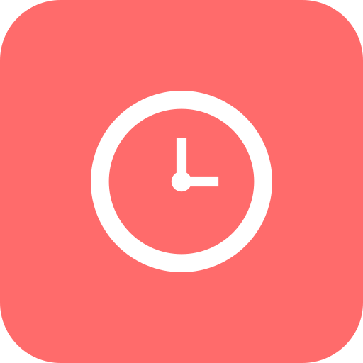

Windows Companion
Download the Windows companion for Lost Time.
Download the Windows 10/11 x64 .exe, pair it once with Lost Time on Android, and keep local app-usage aggregates syncing over your own network.
Send this page to your Windows PC, then download the companion there. Short PC link: qedxyzyt-dot.github.io/pc
A native Linux companion is planned, but this release is a Windows 10/11 x64 .exe. It will not monitor Linux desktops natively.
Open this page on your Windows PC before downloading. The button downloads the latest Windows
self-contained LostTime.WindowsCompanion.exe published for Lost Time.
Latest Windows Companion version: 1.1.9.
Computer versions
Windows 10/11 x64
Use LostTime.WindowsCompanion.exe on Windows PCs and notebooks.
Linux
A native Linux companion needs separate foreground-app, autostart, tray, icon, and packaging adapters.
Other systems
The Windows .exe is not intended for macOS, Linux, Android, or ChromeOS.
Portable self-contained executable. No .NET install is required.
The companion registers itself as soon as the executable opens for the first time.
After pairing, it runs from the tray without reopening the QR window at startup.
What the download includes
The companion app
LostTime.WindowsCompanion.exe monitors foreground Windows apps and exposes a local sync endpoint.
Local storage
Pairing data and usage aggregates are stored under %LOCALAPPDATA%\LostTime\WindowsCompanion.
Tray controls
Use the tray icon to reopen status, refresh pairing, open the data folder, or quit the companion.
First setup
Download LostTime.WindowsCompanion.exe and move it to a folder you will keep, such as your Apps folder or another permanent location.
Run LostTime.WindowsCompanion.exe. On this first launch, it enables Start with Windows for your current user. Windows may show SmartScreen while builds are unsigned; choose to run it if you downloaded it from the official release link above.
In Lost Time on Android, open paired devices and scan the QR code shown by the companion. Keep both devices on the same Wi-Fi or local network.
Close or minimize the companion window. Monitoring continues from the Windows tray, and future Windows startups do not reopen the QR window once pairing exists.
The companion automatically adds itself to the current user's Windows startup. If you move the executable later, open it once from the new folder so Windows can update the startup path.
Privacy and network behavior
Collected
Foreground process name, display name when available, daily total time, open count, and app icon metadata.
Not collected
No screenshots, keystrokes, typed text, URLs, file paths, browser contents, or window titles.
Local sync
Android connects to the companion on your local network using the secret created during pairing.
Troubleshooting
- If Android cannot pair, confirm both devices are on the same network and Windows Firewall allows the companion on private networks.
- If syncing stops after reboot, open the companion once and confirm the tray icon appears; this refreshes the startup registration.
- If you need to pair another phone, open the tray menu and choose to refresh the pairing QR.